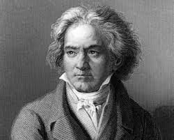
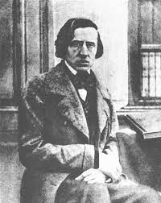
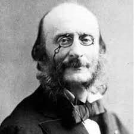

Clássicos online
Neste site irei falar sobre músicas clássicas. O site se chama Clássicos Online e oferece uma grande variedade de obras de diferentes compositores e épocas. Você pode ouvir as músicas online ou baixá-las para o seu computador ou celular. O site também tem informações sobre a história das músicas, as biografias dos compositores e as análises das obras. O site é muito útil para quem quer aprender mais sobre esse gênero musical ou simplesmente apreciar a beleza das melodias.
Beethoven
Ludwig van Beethoven foi um dos maiores compositores da história da música. Nascido em Bonn, na Alemanha, em 1770, ele começou a estudar música desde cedo com o seu pai e outros professores. Aos 21 anos, ele se mudou para Viena, na Áustria, onde se tornou aluno de Joseph Haydn e se destacou como pianista e improvisador. Beethoven compôs obras-primas em vários gêneros musicais, como sinfonias, concertos, sonatas, quartetos e óperas. Ele foi um dos pioneiros do romantismo musical, expressando em suas obras as suas emoções e ideais. Beethoven enfrentou muitas dificuldades ao longo da sua vida, especialmente a perda progressiva da audição, que o levou à surdez total nos últimos anos. Apesar disso, ele continuou a compor obras geniais até a sua morte, em 1827.

Chopin
Frédéric Chopin foi um compositor e pianista polonês do século XIX, considerado um dos maiores expoentes do romantismo musical. Nascido em 1810, na aldeia de Żelazowa Wola, perto de Varsóvia, Chopin mostrou desde cedo seu talento para a música, tendo recebido aulas de piano de seu pai e de outros professores. Aos sete anos, compôs sua primeira obra, uma polonaise. Aos oito anos, apresentou-se em público pela primeira vez, e aos dezesseis anos, ingressou no Conservatório de Varsóvia. Em 1830, deixou a Polônia e mudou-se para Paris, onde se estabeleceu como um dos mais renomados pianistas e compositores da época. Em Paris, Chopin conheceu e se relacionou com diversas personalidades artísticas e intelectuais, como Franz Liszt, Hector Berlioz, George Sand e Victor Hugo. Chopin compôs principalmente para o piano solo, criando obras que exploravam a expressividade e a técnica do instrumento.

Offenbach
Jacques Offenbach foi um compositor e violoncelista francês de origem alemã. Ele é considerado o criador da opereta, um gênero musical que combina comédia, sátira e romance. Suas obras mais famosas incluem Orfeu no Inferno, A Bela Helena e Os Contos de Hoffmann. Offenbach nasceu em Colônia, na Alemanha, em 1819, e mudou-se para Paris em 1833, onde estudou música e começou sua carreira como violoncelista. Em 1844, ele se tornou maestro do Théâtre Français, e em 1855, ele abriu seu próprio teatro, o Bouffes-Parisiens, onde produziu suas primeiras operetas. Offenbach foi um grande sucesso na França e na Europa, mas também enfrentou críticas por sua sátira política e social. Ele morreu em 1880, deixando sua última obra, Os Contos de Hoffmann, incompleta.
